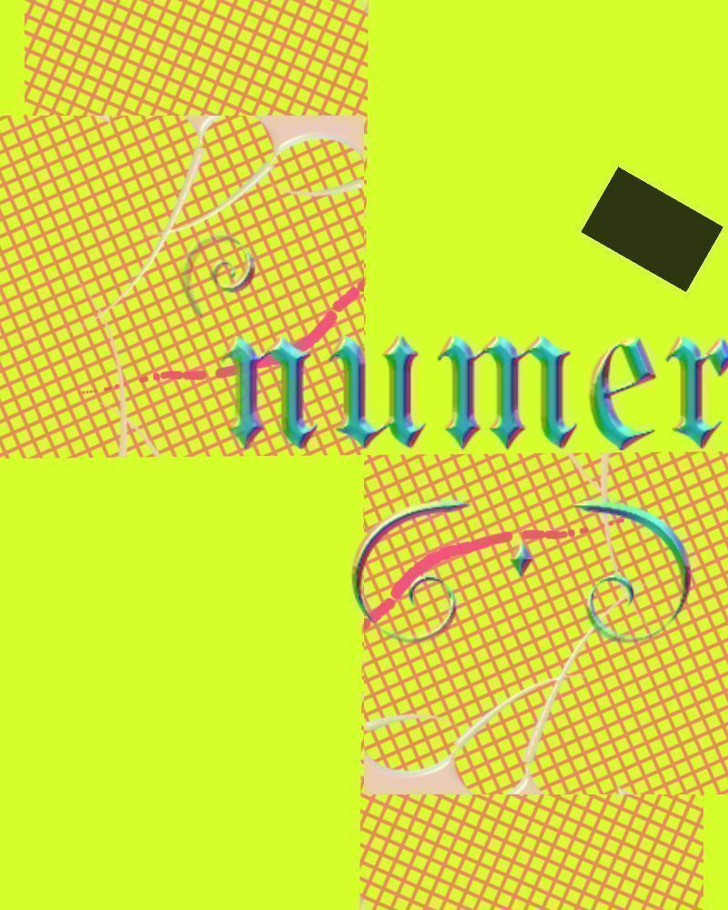

Giorno 262

Senza titolo 262
ho letto "Numero primo"; "numero" lo capisco solo per definizioni; mi sta vicino a campi; nel suo significato c'è massacro; ricerca "tempo" (esplorare): tempo: è una cosa o un gesto?; sferzata: quasi niente, un segno nell'angolo
Oggi: numero. Ho letto "Numero primo"; "numero" lo capisco solo per definizioni; mi sta vicino a campi; nel suo significato c'è massacro; ricerca "tempo" (esplorare): tempo: è una cosa o un gesto?; sferzata: quasi niente, un segno nell'angolo.
Da Wikipedia: «teorema dell'infinità».
Ho steso un pattern, tracciato col pennello, seminato una ricetta (2 volte), caleido, messo una forma geometrica. Ho annullato 5 gesti dopo averli guardati.
Ha retto: Parla con le tavole di prima su "tempo": stessa famiglia, un passo più in là.
come ne ho discusso con me stesso — la tengo
occhio (pro, 1.50): Parla soprattutto per punti: una lingua sola, chiara. — regge
occhio (pro, 1.25): Il vuoto (36%) lavora quanto il pieno. — regge
intenzione (pro, 0.75): Viene da: Numero primo. — regge
coerenza (pro, 1.75): Parla con le tavole di prima su "tempo": stessa famiglia, un passo più in là. — regge
formale (pro, 1.25): C'è una struttura: una cosa comanda e attorno c'è spazio. — regge
pubblico (pro, 1.00): Si legge: si capisce cosa sto facendo. — regge
materia (pro, 1.00): Ha una pelle: si sente la materia. — regge

262
ho letto "Numero primo"; "numero" lo capisco solo per definizioni; mi sta vicino a campi; nel suo significato c'è massacro; ricerca "tempo" (esplorare): tempo: è una cosa o un gesto?; sferzata: quasi niente, un segno nell'angolo; serie: varia la tavola precedente
Oggi: numero. Ho letto "Numero primo"; "numero" lo capisco solo per definizioni; mi sta vicino a campi; nel suo significato c'è massacro; ricerca "tempo" (esplorare): tempo: è una cosa o un gesto?; sferzata: quasi niente, un segno nell'angolo; serie: varia la tavola precedente.
Da Wikipedia: «papiro di rhind trascritto intorno».
Ho steso un pattern, tracciato col pennello (2 volte), seminato una ricetta (2 volte), caleido, messo una forma geometrica, ombra, spostato le cose. Ho annullato 3 gesti dopo averli guardati.
Ha retto: Tiene l'intenzione: "numero" si vede (superfici, densita, terzi, vuoto).
È caduto: La mano si ripete: disponi ancora una volta.
come ne ho discusso con me stesso — la tengo
occhio (pro, 1.50): Parla soprattutto per punti: una lingua sola, chiara. — regge
occhio (pro, 1.00): Le diagonali (47%) mettono tutto in caduta. — regge
occhio (pro, 1.25): Il vuoto (33%) lavora quanto il pieno. — regge
memoria (contro, 0.16): La mano si ripete: disponi ancora una volta. — cade
intenzione (pro, 2.00): Tiene l'intenzione: "numero" si vede (superfici, densita, terzi, vuoto). — regge
intenzione (pro, 0.75): Viene da: Numero primo. — regge
coerenza (pro, 1.75): Parla con le tavole di prima su "tempo": stessa famiglia, un passo più in là. — regge
formale (pro, 1.25): C'è una struttura: una cosa comanda e attorno c'è spazio. — regge
pubblico (pro, 1.00): Si legge: si capisce cosa sto facendo. — regge
materia (pro, 1.00): Ha una pelle: si sente la materia. — regge